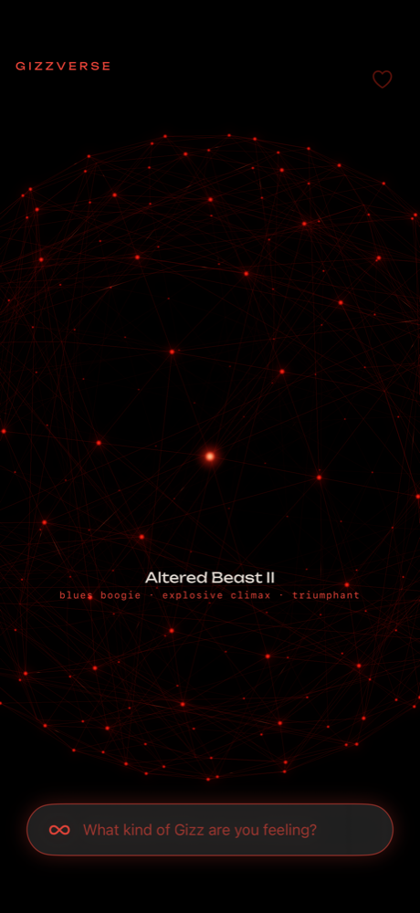

The universe
Every song is a star.
Songs that sound alike sit close together. Songs the band segues between live are linked. Drag to orbit, tap a star to hear it — a real recording from a real night — and follow the threads to the next one.
129 shows · 2013 – 2026 · 2,000+ live takes
